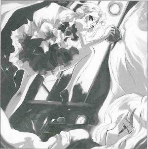
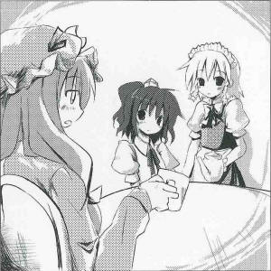

>Treasure Hunter Races the Night
At dawn on X the Xth, a human snuck into several places and collected various strange objects, as revealed by a report from a victim.
The criminal snuck into the victim's house and tried to steal a tool called the Hakkero, which was the victim's treasured possession. Fortunately, the victim hadn't fallen asleep yet, so the theft was foiled.
The criminal was Sakuya Izayoi (human), the head maid of the Scarlet Devil Mansion which stands on the edge of the lake.
When the victim caught her, she had several odd things in her possession, so the victim followed her to the Scarlet Devil Mansion, suspecting was amiss.
The criminal made the excuse below:
These items are for a spell to go to the Moon. The mistress insisted that she wanted to go there before dawn, so I gathered the materials required for it. I would have returned everything when the sun rose.
The day this happened, there was an incident that extended the length of the night to be longer than usual, which caused a rash of unusual occurances.
The criminal also seemed slightly confused and appeared to not fully understand her words.
A pipe is a substitute for a rocket, a spinning top is for a gyroscope and the blood of a snapping turtle works as a liquid fuel. It certainly looks similiar, does it not? Of course, the Hakkero is a rocket engine... However, I really have no idea what 'Armstrong' meant.
The criminal is a sensible and reputable maid among the humans in Gensokyo, so her unusual behavior was beyond conspicuous that day.
Yet, she has a habit of gathering unusual items like bamboo flowers, blue diamonds and the like. I think that led her to commit this strange crime.
The victim, Marisa Kirisame (human), made the following comment about the incident:
Her takin' whatever she wants gets on my nerves. She said she'd give it back later, but she was obviously lyin'.
This time, the Hakkero was returned safely, so the victim didn't pursue further.
The criminal maid and the residents of the Scarlet Devil Mansion also declined to comment. That's why their motivation and purpose are, in the end, uncertain.
 Aya
It has already been more than half a year. May I please ask you about the truth behind this incident?
Sakuya
Ah, may I have your name please?
Aya
Please don't feign ignorance. I suppose you're involved not only in this, but the Eternal Night incident as well.
Sakuya
Yes, I can stop time, but not the night.
Aya
But why did you collect all those strange things?
Sakuya
Those were Milady's orders. I cannot talk about the details. Please leave the premises.
Aya
Where is your mistress? I have some questions to ask her.
Sakuya
The lady doesn't remember such trivial matters. It would be a fruitless effort to ask her.
Aya
I guess that's that. Speaking of which, do you really not remember anything at all?
Sakuya
I do not remember. Have you not heard enough?
Patchouli
Those were items needed for the magic spell to reach the moon.
Sakuya
Ah, Lady Patchouli. I shall prepare the tea at once.
Patchouli
It's already tea time and yet you haven't brought me tea, so I came to check.
Aya
Wait, a magic spell to reach the moon... You're going to use those items to go to the moon?
Patchouli
Who're you?
Aya
I'm a newspaper reporter, and I seek only the truth. So how did it go? Did you go to the moon?
Patchouli
In the end, we failed. The magic of the outside world is too complex. It would be futile unless we concentrated all of the powers in Gensokyo. But what Sakuya ended up bringing me was not liquid fuel, but the message of the turtle, which I understood instantly.
Sakuya
...I've put something unusual in today's tea.
Aya
The turtle's message? You mean like the proverb a difference like that between a snapping turtle and the moon?
Patchouli
Do you understand the meaning of that proverb at all? It doesn't really mean things that are similar looking but can't be compared. It means illusions and reality, the palpable and the abstract. So as soon as she showed me all that was needed, I knew we couldn't go to the moon.
Sakuya
We will be having tea time now. Will you be joining us as well, Miss Aya? I believe this conversation will take some time, so you are welcome to stay.
(*Note from Shameimaru: The incident where dawn would not break, and the movement of the moon had completely stopped. The youkai easily influenced by the moon as well as the humans who sleep at night were quite confused. Of all the recent incidents, it was the most perilous. At the moment, the cause and offender are both unknown. In the end, the moon suddenly disappeared and morning came. Several denizens stick to unconfirmed information that the resolution started with the Hakurei shrine maiden and Sakuya Izayoi, but the entirety of the incident remains in the rumor mill.)Profile:
Sakuya Izayoi
A human working as the head maid at the Scarlet Devil Mansion.
Has the ability to manipulate time.
Appearances:
Embodiment of Scarlet Devil, Perfect Cherry Blossom, Imperishable Night, Immaterial and Missing Power, Phantasmagoria of Flower View